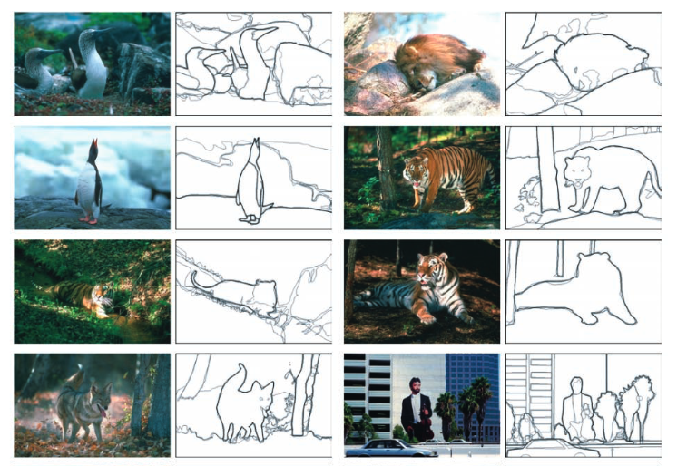
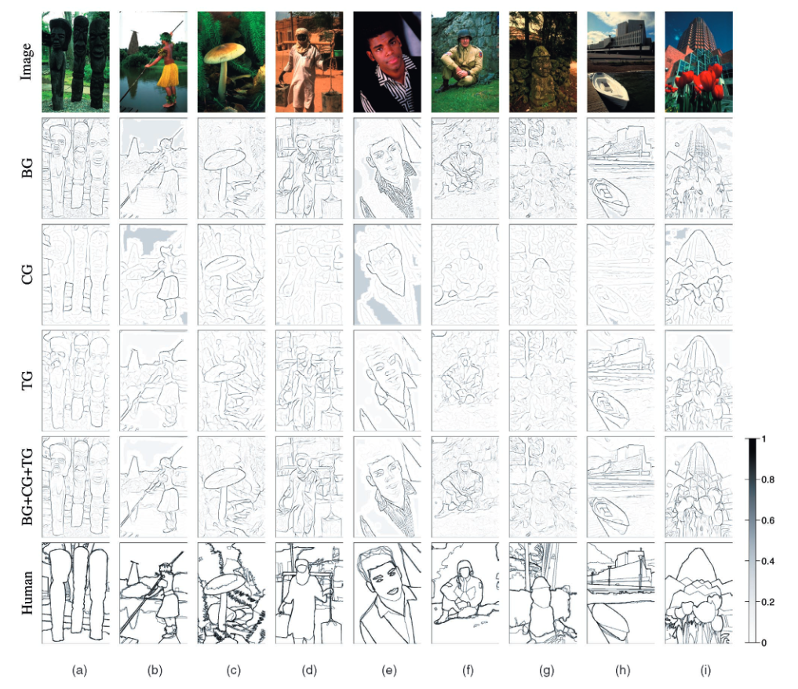
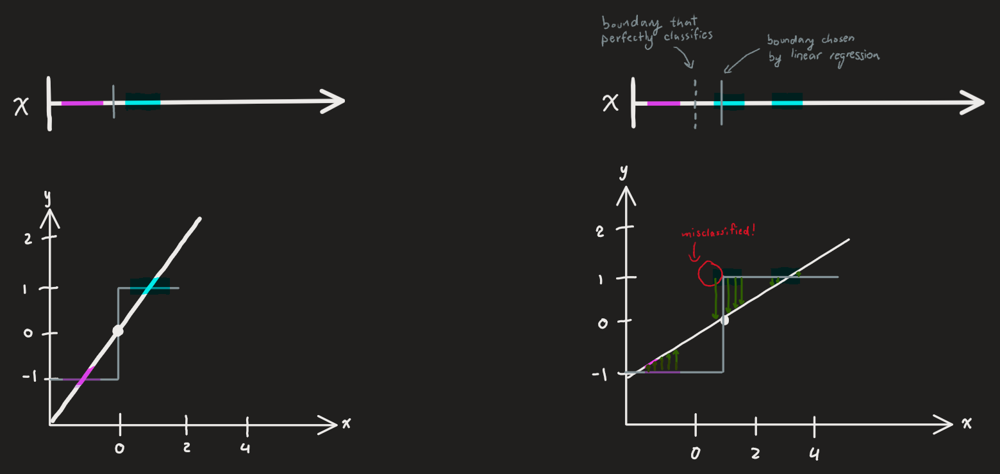
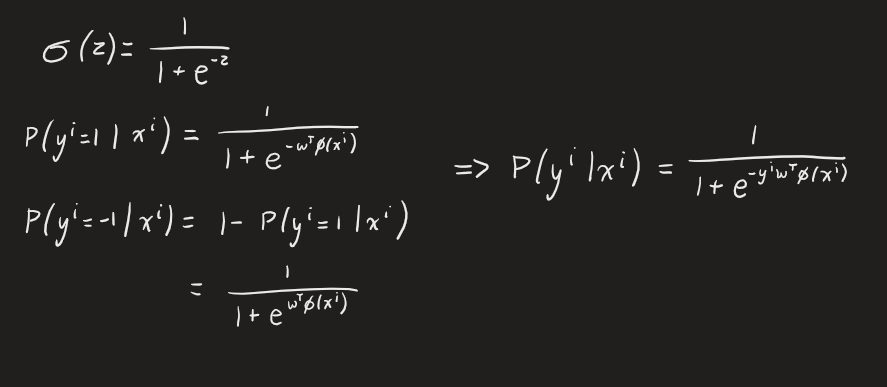
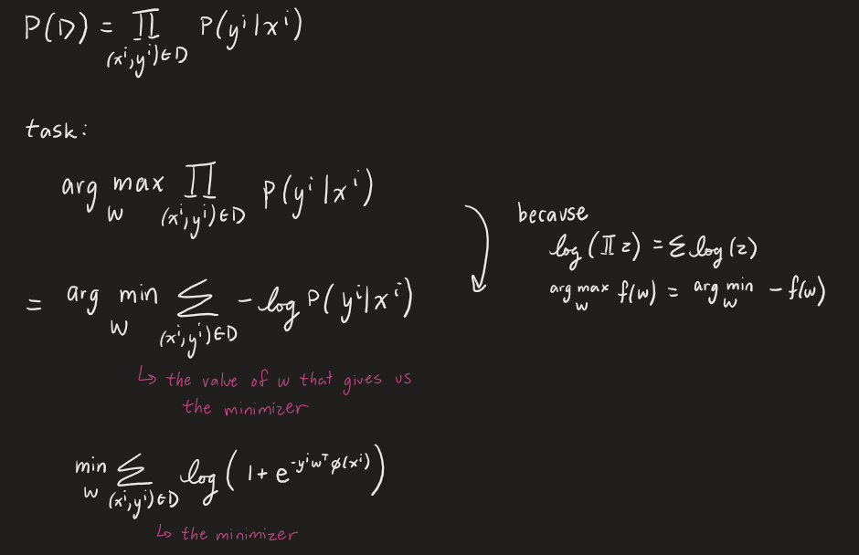
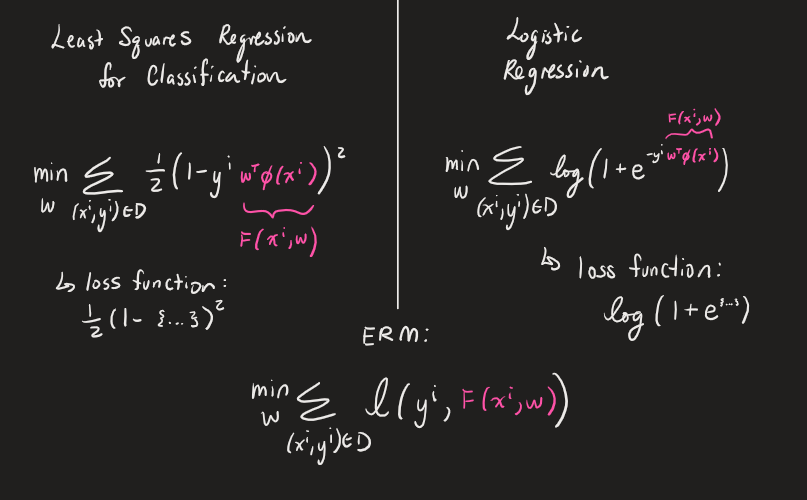

Feature Construction & Logistic Regression
Feature Construction
Selecting good features is often key to the performance of a machine learning algorithm.
To explain through a real world application (
Martin et al.. 2019 Learning to Detect Natural Image Boundaries),
consider the task of boundary detection in images where we want to define object boundaries.

Figure 1. Human-marked segment boundaries
Let \(y = \{+1, -1\}\) since we want to label each pixel as non-boundary (+1) or boundary (-1). Let \(x\) = every pixel (in RGB values). So \(n\) = # of pixels * # of images and the dimension \(d = 3\) for RGB. This is a binary classification problem.
Humans will be able to detect the boundaries through various cues like changes in color, brightness, and texture. It is because we use a collection of cues that allows us to detect boundaries in tricker images such as when the foreground and background are the same color or when shadows mimic boundaries. To do the same in machine learning, we can transform the inputs to a list of features that can help with the classification problem. $$\phi(x^i) = \{features\}$$ \(\phi(x^i)\) is a vector of features computed in the neighborhood of pixel \(i\), e.g. intensity, texture gradient, oriented gradient, etc..

Figure 2. Boundaries produced by various gradient detectors
In the research paper, they used brightness gradient (BG), color gradient (CG), and texture gradient (TG) as their feature transformations. As can be seen from Figure 2, the boundaries were best detected when using all the 3 cues.Using the Wrong Model
We can easily show how important it is to pick the right algorithm for the task with a simple example. Consider the target labels \(y^i \in \{-1, 1\}\).
We want to classify the all input \(x\) points as either -1 or +1 with the 1-D model: \(y^i = sign(w_1x^i + w_0)\).

Figure 3. Regression model incorrectly predicting classification task
Consider the example on the left of Figure 3. We want to separate the purple section and the blue section by marking purple as -1 and blue as +1. It's easy to see that the gray line would perfectly classify the sections. The sign function would be the gray step function drawn on the graph. Keep in mind from Lecture 2 - Linear Regression, that the linear regression algorithm is measured by the squared loss function. So the algorithm will attempt to predict the boundary that minimizes the average squared error i.e. the distance between the highlighted regions and the line itself.The example of the right of Figure 3 shows how past the simple first example, linear regression will fail for this simple classification problem. In this example, the dotted gray line is the boundary that would have perfectly classified the purple and blue sections. However, the solid gray line is the boundary that is actually picked by linear regression. As we can see, it misclassifies a small segment of the first blue section as -1 instead of +1. This is because of the algorithm is attempting to find the minimum squared error between the inputs and the predicted line (as seen in the green arrows) and is shifted to the right because of the additional blue section to the right.
The task that we are applying linear regression to is not the task that it was designed for.
Logistic Regression
Logistic Regression is a probabilistic formulation for classification that uses the Bernoulli Random Variable distribution. This allows us to model the probability of 2 options: $$\theta(x) \in [0,1]$$ $$P(y=1) = \theta(x)$$ $$P(y=-1) = 1 - \theta(x)$$ The probability that \(y=1\) is \(\theta(x)\), a real number between and including 0 and 1. Since there are only 2 outcomes, \(P(y=-1)\) is simply 1 minus that. Now if we apply a linear transformation, we get \(w^T\phi(x) \in \mathbb{R}\). However, we want this value to remain something between 0 and 1, so we can apply the sigmoid function to this:

Eq 1. Applying Sigmoid to Linear Transformation
Now that we have a probability function for a linearly transformed input, how do we go about selecting the \(w\) that will maximize the probability of dataset \(D = \{(x^i, y^i)\} \)?When deriving the task of selecting the model parameter, we will assume that all samples in \(D\) are iid (independent & identically distributed). Because of the assumption, we can state that \(P(D)\) is just the product of all samples in the dataset.

Eq 2. Model Parameter Selection Task Derivation
Least Squares Linear Regression vs. Logistic Regression
We can compare the the minimizers of both models:

Eq 3. Linear Regression vs. Logistic Regression
We can see a unified view through the Emperical Risk Minimization equation (ERM), which we often use to solve ML problems. It is essentially minimizing some average loss function over the data. For least squares linear regression, that loss function is \(\frac{1}{2}(1 - something)^2\) and for logistic regression, it is \(log(1+e^{something})\).We can see the ramifications of this in this graph:

Figure 4. Square Loss vs Logistic Loss
For squared (quadratic) loss, if the score is too large (too correct), the model will penalize it for being too confident in the prediction. For log (logistic) loss however, it is much better behaved as the loss decreases as it becomes more correct.